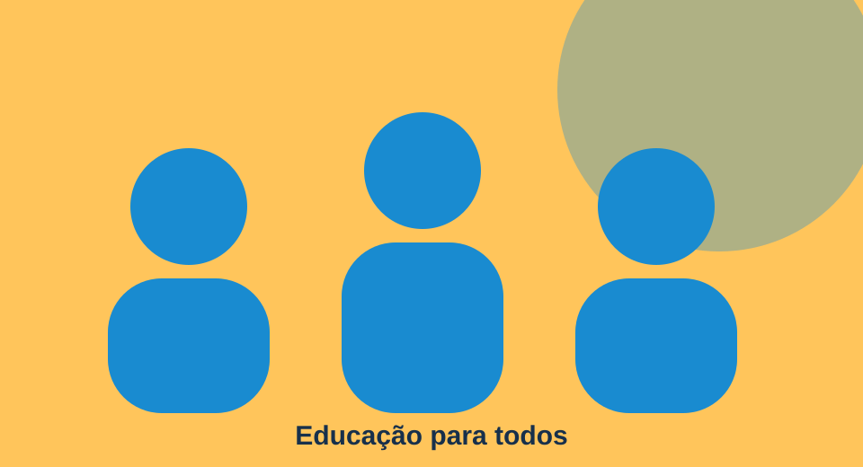
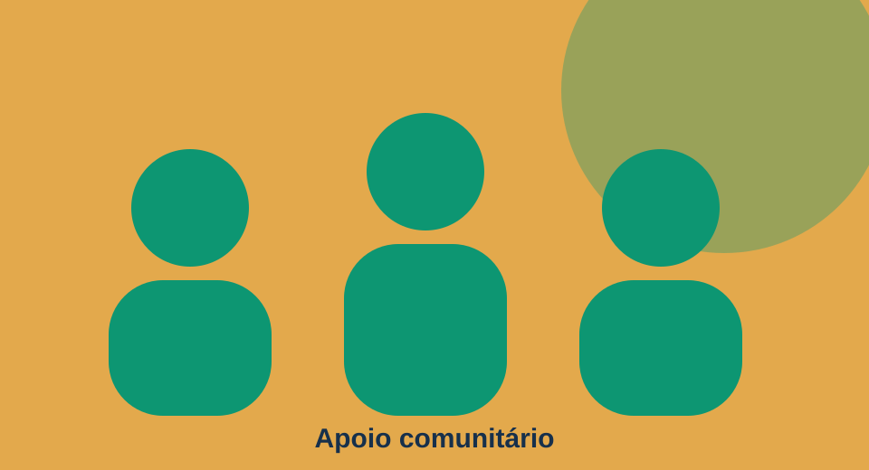

Projeto de Educação
Apoio ao aprendizado e oficinas para crianças e adolescentes.
Conheça as frentes de atuação da nossa ONG demonstrativa.

Apoio ao aprendizado e oficinas para crianças e adolescentes.

Campanhas solidárias e distribuição de recursos essenciais.
Participe das ações sociais e compartilhe suas habilidades.
Quero ser voluntárioContribuições ajudam a manter as iniciativas. Para conhecer possibilidades de apoio, entre em contato com a organização.
Quero contribuir